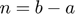
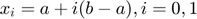

Practica 4 Convolucion y correlacion
Grupo: 2TV2
Materia: Señales y Sistemas
Alumnos:
Vargas Cano Cesar David
Toledo Aguado Arturo Emmanuel
Profesor: Dr. Rafael Martínez Martínez
Contents
Objetivos
- Conocer métodos básicos de integración numérica
- Simular convoluciones y correlaciones de señales continuas
- Manipulación de instrucciones en MATLAB
Introduccion
En el análisis numérico, la integración numérica constituye un amplio campo de algoritmos que son utilizados para calcular el valor numérico de una integral definida.
Existen varias razones para la utilización de la integración numérica: 1.- La función a integrar f(x) debe ser conocida únicamente en ciertos puntos. 2.- La función a integrar es muy difícil o imposible de encontrar su antiderivada, un ejemplo de ello es la función f(x)=e^(-x^2), la cuál es la función error, su antiderivada no puede ser descrita en forma elemental. 3.- Puede ser posible encontrar una antiderivada de una función de manera simbólica, pero es posible que sea más sencillo encontrar su aproximación numérica que calcular su antiderivada.
Existen diversos métodos para realizar aproximaciones numéricas, entre ellos se encuentran las reglas de cuadratura Newton-Cotes, llamadas así debido a Isaac Newton y Roger Cotes. Las fórmulas Newton-Cotes son útiles para encontrar el valor de la integral en espacios equidistantes entre sí.
- Regla del Trapecio
Reescribimos la función del integrando en términos de un polinomio de primer grado: con n=1
Donde


Ejemplo
- Regla de Simpson 1/3
Reescribimos la función en términos de un polinomio de segundo orden, usando interpolación de Lagrange para lo cuál se necesitan 3 puntos igualmente espaciados. Fórmula:
Regla de simpson 1/3 (n=2)
Donde: $
Ejemplo:
- Regla de Simpson 3/8
Reescribimos la función en términos de un polinomio de grado 3. Fórmula:
Donde:
Ejemplo
- Cuadratura de Gauss
Es una aproximación de una integral definida de una función que selecciona los puntos de la evaluación de manera óptima y no en una forma igualmente espaciada, construída para dar el resultado de un polinomio de grado 2n-1 o menos, elegibles para los puntos xj y los coeficientes wj con j = 1,...,n.
Ejercicio 1
Por el metodo analitico nosotros sabemos que el producto de la convolucion
Ejercicio 2
Por el metodo analitico nosotros sabemos que el producto de la convolucion
Ejercicio 3
Realizando la correlacion tratandola como convolucion se obtiene que:
Ejercicio 4


Realizando la correlacion tratandola como convolucion se obtiene que:
4.png)